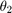

clear; close all; %Tempo de cada simulação ttotal = 250; %Condições iniciais m=1; l=0.5; g=9.8; dt10 = deg2rad(0); dt20 = deg2rad(-30); %Intervalos de tempo tlim = [0, 30, 100, 250]; %Posições iniciais para simular x = [-0.9, 0.8, 0.1]; y = [0.1, -0.5, -0.5]; for n = 1:length(x) %Cálculo dos ângulos iniciais t0_calc = t0Calc([x(n), y(n)]); t10 = t0_calc(1); t20 = t0_calc(2); %Cálculo dos p iniciais p0_calc = p0Calc([dt10, dt20, t10, t20]); p10 = p0_calc(1); p20 = p0_calc(2); %Simulação do pêndulo sim("pendulum"); figure; plot(tout, t2); grid on; %Linha de referência pi pi_line = refline([0 pi]); pi_line.Color = "r"; %Linha de referência -pi npi_line = refline([0 -pi]); npi_line.Color = [0, 0.5, 0]; %Limitação de x aos intervalos de tempo xlim([tlim(n) tlim(n+1)]); title(sprintf("Evolução temporal de \\theta_2 para x=%.1f e y=%.1f", x(n), y(n))); xlabel("Tempo"); ylabel(sprintf("\\theta_2 total")); %Encontra o primeiro valor de t1 que seja igual a tf1 = find(abs(t1) > pi, 1); tf2 = find(abs(t2) > pi, 1); if ~isempty(tf1) && ~isempty(tf2) tf= tout(min(tf1, tf2)); elseif ~isempty(tf1) tf = tout(tf1); elseif ~isempty(tf2) tf = tout(tf2); end fprintf("Instante em que ocorre looping para x=%.1f e y=%.1f: %f s\n", x(n), y(n), tf); line([tf tf], get(gca, 'ylim'), "Color", "m"); legend(sprintf("\\theta_2"), ... sprintf("\\pi"), ... sprintf("-\\pi"), ... sprintf("tempo loop"), ... "Location", "eastoutside" ... ); end
Instante em que ocorre looping para x=-0.9 e y=0.1: 4.991128 s Instante em que ocorre looping para x=0.8 e y=-0.5: 90.746065 s Instante em que ocorre looping para x=0.1 e y=-0.5: 239.269728 s
Comentários: Observa-se que os valores do  simulados não estão contidos somente no intervalo pois não representam o teórico mas sim o andamento do mesmo ao longo do tempo, como se pode verificar no exemplo do Gráfico 3 em que existe um loop vindo do lado de no qual o não passa para mas continua a acumular no mesmo sentido. Isto não afecta o cálculo do tempo do primeiro looping pois este só têm em conta a primeira vez que o passa por ou . Existem casos onde este método de cálculo do tempo de looping falha pois graças à interação entre os pêndulos o ultrapassa ou apenas momentaneamente retornando ao sentido anterior.